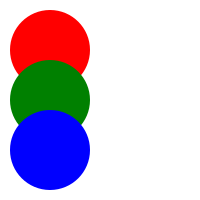

| RGB-space (JS) |

|
const protanopia = [
[0.1120, 0.8853, -0.0005, 0],
[0.1126, 0.8897, -0.0001, 0],
[0.0045, 0.0001, 1.00191, 0],
[0, 0, 0, 1]
];
const normalVision=[
[1, 0, 0, 0],
[0, 1, 0, 0],
[0, 0, 1, 0],
[0, 0, 0, 1]
];
const partial = Matrix.lerp(normalVision, protanopia, Globals.t);
const result = Matrix.crossMultiplyMatrixVector(color, partial);
return result;
|
| LMS-space (JS) |
|
const protanopia = [
[0.1120, 0.8853, -0.0005, 0],
[0.1126, 0.8897, -0.0001, 0],
[0.0045, 0.0001, 1.00191, 0],
[0, 0, 0, 1]
];
const normalVision=[
[1, 0, 0, 0],
[0, 1, 0, 0],
[0, 0, 1, 0],
[0, 0, 0, 1]
];
const partial = Matrix.lerp(normalVision, protanopia, Globals.t);
const result = Matrix.crossMultiplyMatrixVector(color, partial);
return result;
|
| RGB-space (GLSL) |
|
precision highp float;
uniform sampler2D u_image;
uniform float t;
varying vec2 vTextureCoordinate;
mat4 protanopia = mat4(
0.1120, 0.8853, -0.0004, 0,
0.1126, 0.8897, -0.0001, 0,
0.0045, 0.0000, 1.00191, 0,
0, 0, 0, 1
);
mat4 normalVision = mat4(
1.0, 0.0, 0.0, 0.0,
0.0, 1.0, 0.0, 0.0,
0.0, 0.0, 1.0, 0.0,
0.0, 0.0, 0.0, 1.0
);
mat4 lerp(mat4 start, mat4 end, float t){
return start + (end - start) * t;
}
void main() {
vec4 source = texture2D(u_image, vTextureCoordinate);
mat4 partial = lerp(normalVision, protanopia, t);
vec4 target = source * partial;
gl_FragColor = target;
}
|
|
RGB-space (SVG Filter)
|
|
|